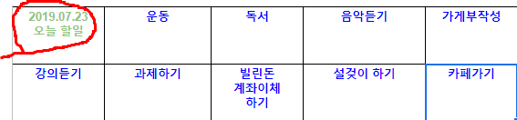
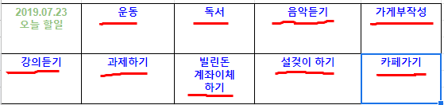
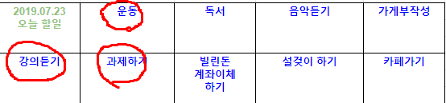
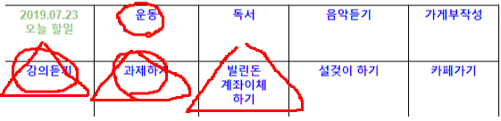
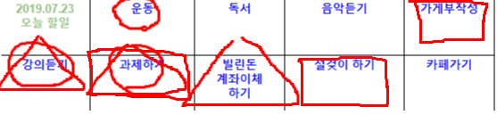

정해줘 우선순위 사용 팁
Step.1

그림에 8칸의 상자가 있습니다.
이중 위쪽 라인 가장 왼쪽에 초록색으로 날짜와 주제를 적어줍니다. (예:2019.07.23 오늘 할일)
Step.2

이제 남은 7칸에 파란색으로 할 일들을 생각나는데로 나열해줍니다. (예:운동,독서,음악듣기,가게부작성,강의듣기,과제하기,빌린돈 계좌이체하기,설겆이하기,카페가기 등등)
※point:키워드로 짧게 적기
Step.3

특히 중요한것 3가지에 ○ 로 표시합니다.
Step.4

오늘중 하지않으면 곤란한 것에 △로 표시합니다.
Step.5

방치해두면 곤란한 것에 □로 표시합니다.
Step.6
- ○,△,□ 이 가장 많이 겹쳐있는 것이 가장 먼저 해야할 1순위 입니다.
- 여러개로 겹친 것이 없다면 △로 표시된것이 1순위가 됩니다.
※그외에 표시되지 않았거나 □표시는 최악의 경우가 아닌이상 오늘 하지 않아도 되는 일입니다.
자! 이제 우선순위를 정하러 가볼까요?
▼▼아래 클릭▼▼
정해줘 우선순위 시작하기